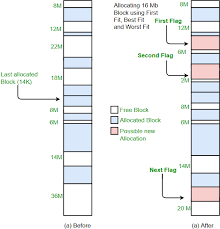
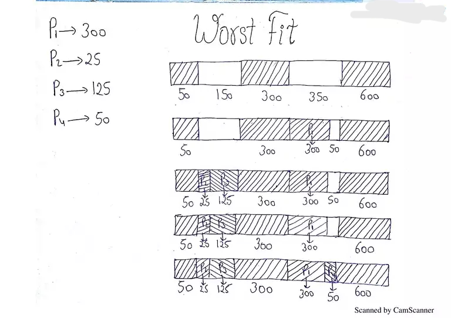
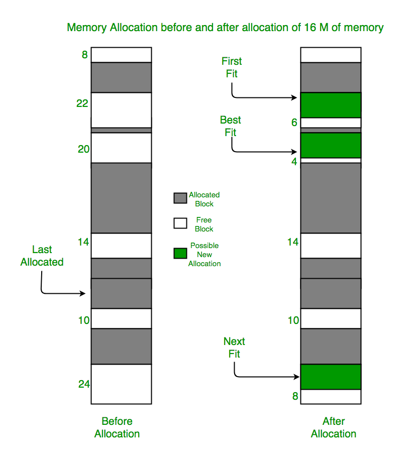

About topic
Know About topic
Memory Fit Algorithms

First Fit
First Fit
- This method keeps the free/busy list of memory partitions in ascending order of memory addresses.
- It searches for the first free partition that is large enough to accommodate the job.

Best Fit
Best Fit
- This method searches the entire list of free memory partitions and selects the one that is closest in size to the job.
- It optimizes memory utilization but requires more time for searching the best-fit partition.

Worst Fit
Worst Fit
- This method selects the largest available memory partition that can accommodate the job.
- It creates large empty spaces and is useful for reducing fragmentation but may lead to poor memory utilization.

Next Fit
Next Fit
- This method starts searching for free partitions from the last allocated partition and wraps around to the beginning of the list.
- It reduces external fragmentation and is suitable for scenarios with jobs of varying sizes.